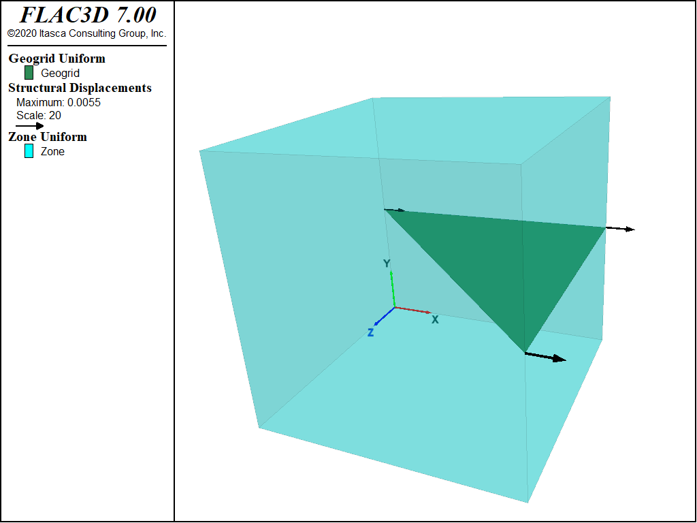
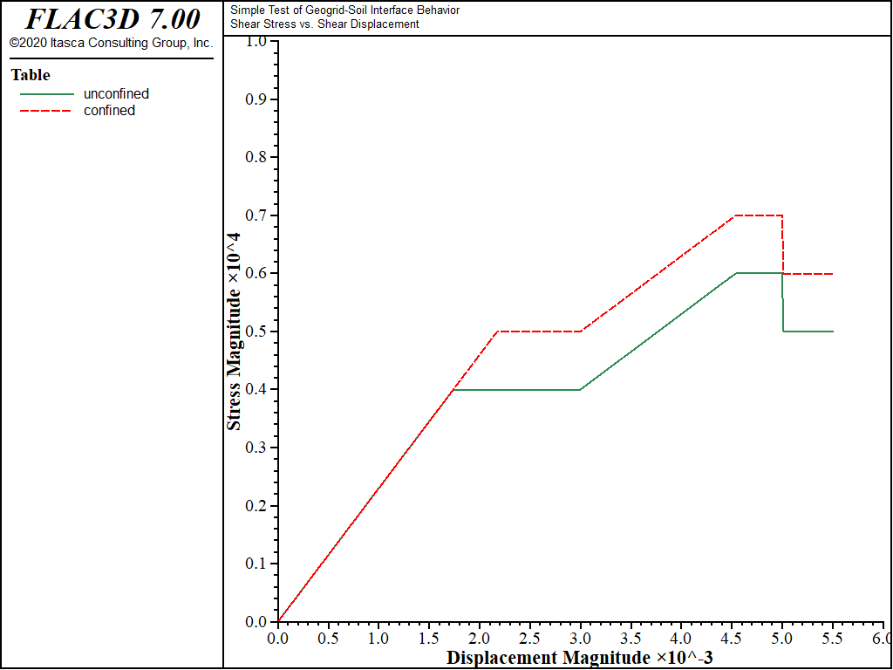

土工格栅-土体界面特性的简单测试
问题描述
注意
本示例的工程文件可在 FLAC3D 中查看/运行。[1] 所使用的主数据文件（main data files）在本示例末尾给出。其余数据文件可在该工程中找到。
将土工格栅埋入土块中，然后从土块中拔出。土体用单个网格单元表示，土工格栅用单个土工格栅单元表示。监测并绘制其中一个耦合弹簧的剪应力和剪切位移，以展示土工格栅-土体界面性质对系统响应的影响。
FLAC3D 模型由埋在一个网格单元中的单个土工格栅单元组成，如图 1（Figure 1） 所示。土工格栅最初使用 结构土工格栅创建按三角形（structure geogrid create by-triangle） 命令创建为嵌入该网格单元的单个三角形。该网格单元被指定弹性性质，并在所有方向上完全固定。土工格栅被指定各向同性材料性质和厚度，并对所有土工格栅节点施加全局 \(x\) 方向 1 × 10-6 m/step 的恒定速度。使用 structure geogrid history 命令监测一个耦合弹簧中的剪应力和总剪切位移。随后改变土工格栅-土体界面性质，以展示其对系统行为的影响。


图 1：土工格栅-土体界面特性简单测试的 FLAC3D 模型。
两种情形下的剪应力与总剪切位移的关系如图 2（Figure 2） 所示。峰值剪应力由下式给出（见土工格栅单元沿剪切方向的接触面行为（Shear-directional interface behavior for geogrid elements））
| 其中： | \(c\) | = | 耦合弹簧黏聚力； |
| \(\sigma_m\) | = | 有效围压；以及 | |
| \(\phi\) | = | 耦合弹簧摩擦角。 |
对于所指定的初始性质，围压为零和 1.73 kPa 的情形分别给出预期的峰值剪应力 4 kPa 和 5 kPa。所指定围压的作用是使响应曲线提高 1 kPa，实际结果正是如此。此外，这些曲线的斜率等于单位面积上的耦合弹簧刚度（structure geogrid property coupling-stiffness）。当修改任何土工格栅性质时，系统会相应改变。


图 2：剪应力与总剪切位移的关系（无围压与围压 1.73 kPa）。
数据文件
SoilInterfaceTest.dat
model new
model title "Simple Test of Geogrid-Soil Interface Behavior"
; 试验工况 1，围压 = 0
[global confiningStress = 0]
program call 'PerformTest'
history export '1' vs '2' table 'unconfined'
model save 'SoilInterfaceTest0'
; 重置
zone delete
struct geogrid delete
history delete
; 试验工况 2，围压 = -1.73e3
[confiningStress = -1.73e3]
program call 'PerformTest'
history export '1' vs '2' table 'confined'
model save 'SoilInterfaceTest173'
PerformTest.dat
model large-strain off
; 单个网格单元试验
zone create brick size=(1,1,1)
; 指定材料模型和参数
zone cmodel assign elastic ; 岩体取砂质页岩
zone property bulk=3.33e9 she=2.5e9 ; 岩体 E=6 GPa，nu=0.2
; 初始化围压
zone initialize stress-yy=[confiningStress] ; 施加围压，
; 0 或 -1.73e3
; 固定所有网格单元的网格点
zone gridpoint fix velocity
; 创建三角形土工格栅，并指定参数
struct geogrid create by-triangle (0,0.5,0) (1,0.5,0) (1,0.5,1)
struct geogrid property thickness=0.1 isotropic=( 20e9, 0.2) ...
coupling-stiffness=2.3e6 coupling-cohesion=4e3 ...
coupling-friction=30.0
; 记录若干历史
struct geogrid history coupling-stress position (0.5,0.5,0.3)
struct geogrid history coupling-displacement position (0.5,0.5,0.3)
; 固定结构节点速度
struct node fix velocity
struct node initialize velocity-x 1e-6 local
; 循环
model cycle 3000 ; 总位移 3e-3
; 更新耦合参数
struct geogrid property coupling-cohesion=6e3 coupling-stiffness=1.3e6
model cycle 2000 ; 总位移 5e-3
; 更新耦合参数
struct geogrid property coupling-cohesion=5e3
model cycle 500 ; 总位移 5.5e-3
尾注
| [1] | 要在 FLAC3D 中查看该项目，请使用程序菜单。
⮡ FLAC |
| 这些内容对您有帮助吗？… 版权与免责声明 | FLAC3D © 2019, Itasca | 原文更新于 2020 年 10 月 8 日 |